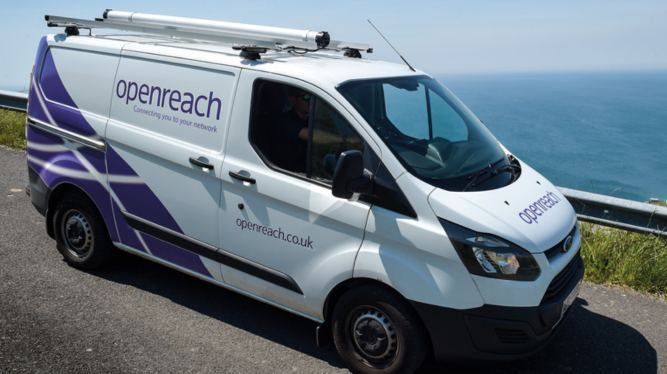
Openreach beendet Kupfer-Vertrieb in 112 weiteren GebietenAusgabe vom 9. Oktober 2026
Alle Meldungen
Netz & Technik
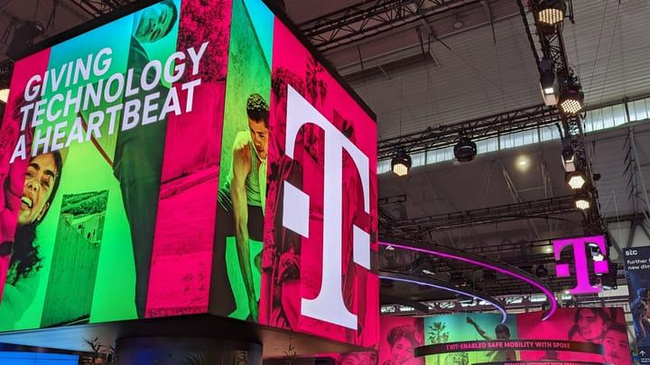
Deutsche Telekom plant 2,5 Milliarden Euro Einsparung durch KITarife & Angebote
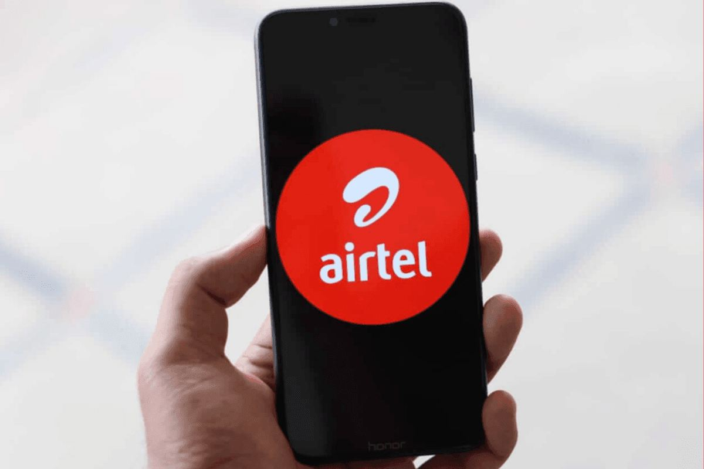
Bharti Airtel erhöht Postpaid-Preise um 50 Rupien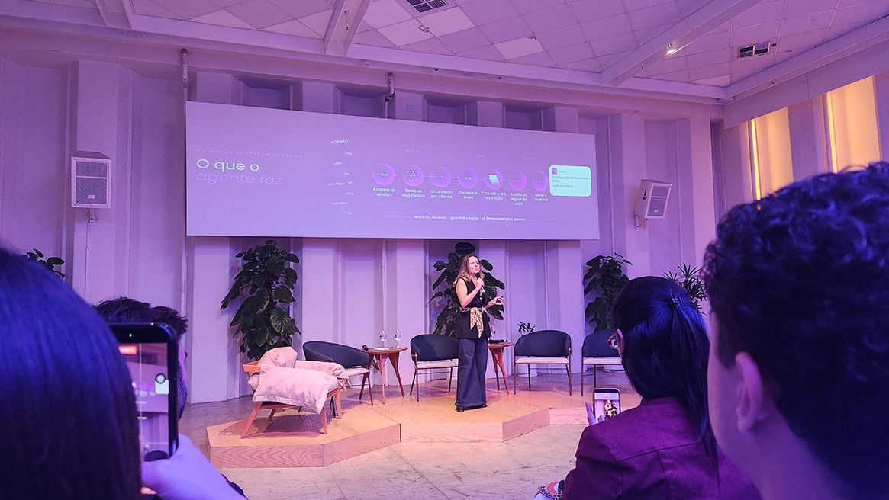
KI-Agent automatisiert Marketing-Kampagnen 300-mal schneller als MenschenSatellit & Direct-to-Cell
Regulierung & Politik
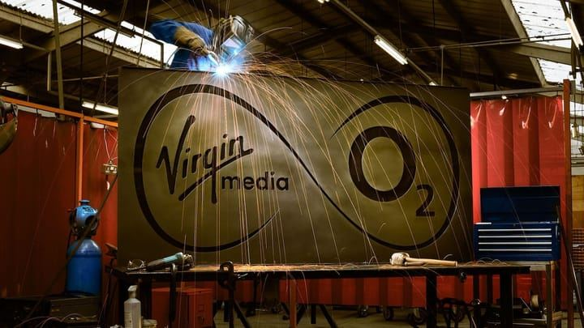
VMO2 kritisiert geplante BT-Übernahme von TalkTalk scharfGeld & Übernahmen
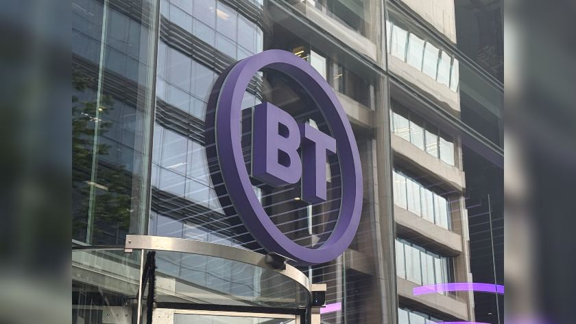
BT übernimmt TalkTalk in Großbritannien für 400 Millionen PfundPartnerschaften
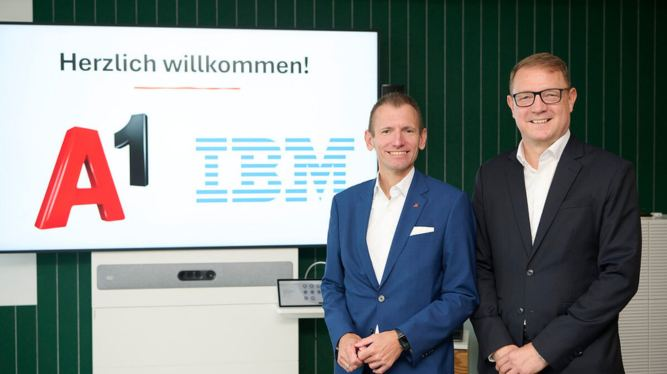
A1 und IBM bringen souveräne KI für UnternehmenVermischtes
Netz & Technik
35 Meldungen
Was das für uns heißtDie konsequente Abschaltung von Altsystemen bei hoher Glasfaser-Verfügbarkeit könnte unsere Migrationskosten senken, erfordert aber sehr wahrscheinlich eine frühzeitige und klare Kommunikation gegenüber betroffenen Bestandskunden.
Auch berichtet von ISPreview UK
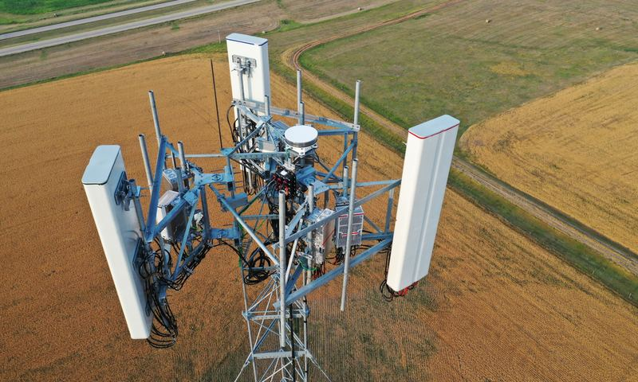
Netzausfall bei Telenor lähmt norwegische NotrufdiensteAuch berichtet von Developing Telecoms
Was das für uns heißtWir müssen sicherstellen, dass unsere eigenen Netz-Upgrades bei der Vermarktung als klare Qualitäts-Differenzierung wahrgenommen werden, wenn Wettbewerber diese Leistungen als Inklusiv-Feature positionieren.
Auch berichtet von Anthropic
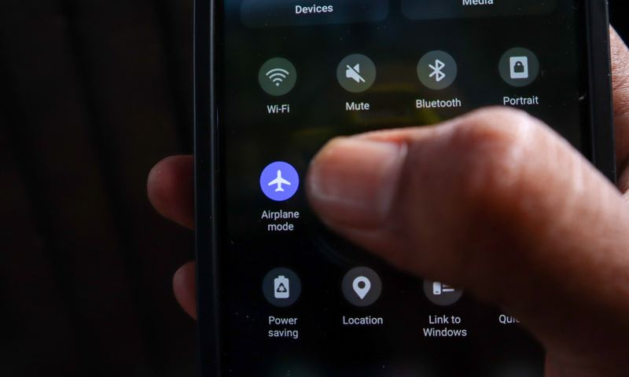
Android führt KI-gestützte Sicherheits-Blackbox für Nutzerdaten ein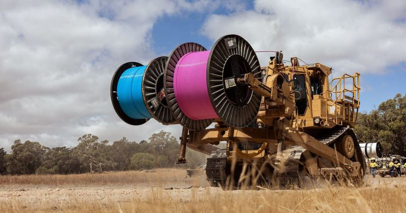
Telstra schaltet neue Glasfaserroute zwischen Perth und Sydney freiAuch berichtet von The Fast Mode, Fierce Network
Auch berichtet von PolicyTracker
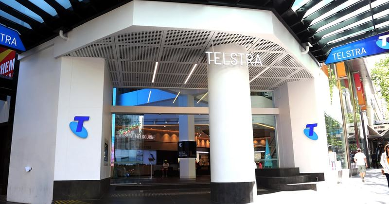
Telstra-Technikvorstand mahnt Fokus auf Netzgrundlagen vor KI-Investitionen an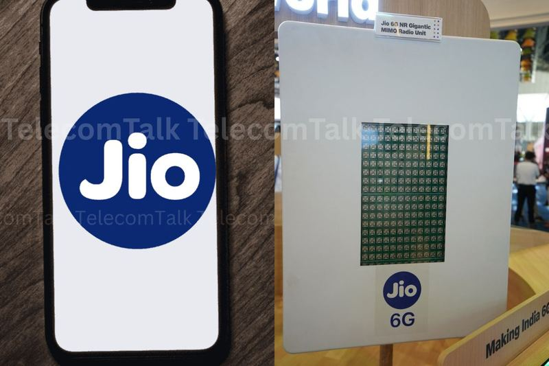
Reliance Jio zeigt Indiens erste selbst entwickelte 6G-Radioeinheit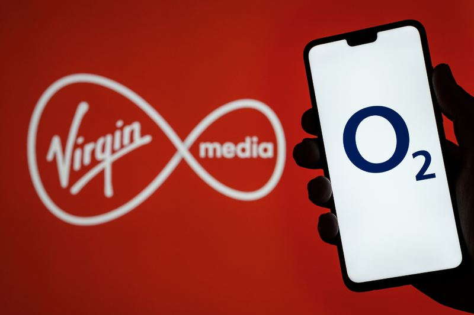
Virgin Media O2 startet eigenständiges 5G in Bristol
Tarife & Angebote
52 Meldungen
Was das für uns heißtDie Einführung expliziter Miet- und Rückgabepauschalen bei Wettbewerbern schafft Spielraum, unser Premium-Hardware-Modell im Festnetz durch transparente Service-Inklusivleistungen besser zu rechtfertigen.
Was das für uns heißtAggressive 10-Dollar-Prepaid-Aktion in Nordamerika - erhöht den Rechtfertigungsdruck für unsere eigenen Einstiegspreise im Prepaid-Segment.
Was das für uns heißtDie KI-gestützte automatische Erfassung von Rechnungsdetails in der App senkt die Fehlerquote bei Zahlungen und könnte die Adoptionsrate unserer eigenen Payment-Lösungen massiv erhöhen.
Auch berichtet von Safaricom
Was das für uns heißtDie Kopplung von Mobilfunk-Einstiegstarifen mit einem einjährigen Streaming-Abo könnte eine sehr wahrscheinliche Methode sein, um die Wechselhürden für junge, digital affine Zielgruppen spürbar zu senken.
Was das für uns heißtDie massiv gestiegenen Hardwarepreise bei High-End-Foldables erfordern eine Anpassung unserer Ratenzahlungsmodelle, um die Einstiegshürde für Kunden trotz der sehr hohen Preise niedrig zu halten.
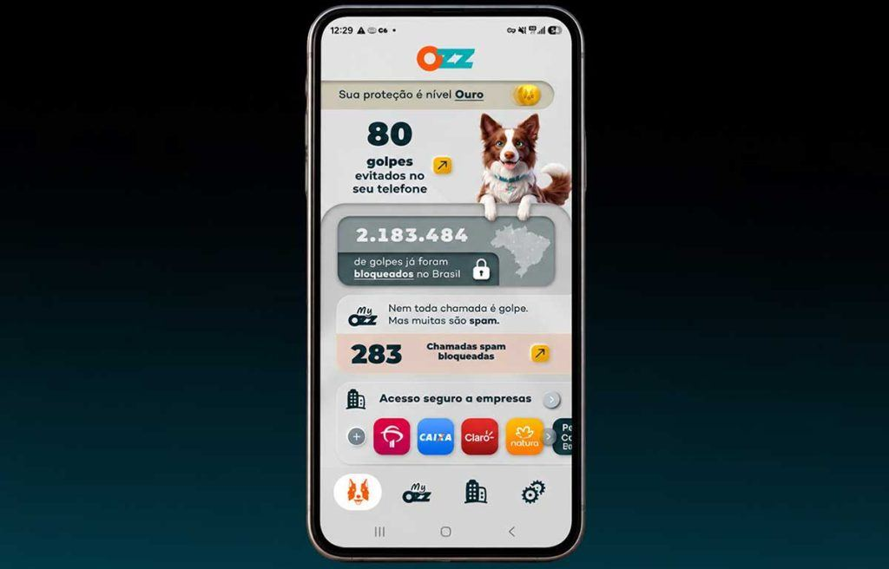
DMA startet App zur automatischen Blockierung von BetrugsanrufenWas das für uns heißtEine integrierte Betrugsschutz-Funktion, die auf Verhaltensdaten basiert, wäre eine attraktive Sicherheits-Option zur Differenzierung gegenüber Wettbewerbern in unserem Portfolio.
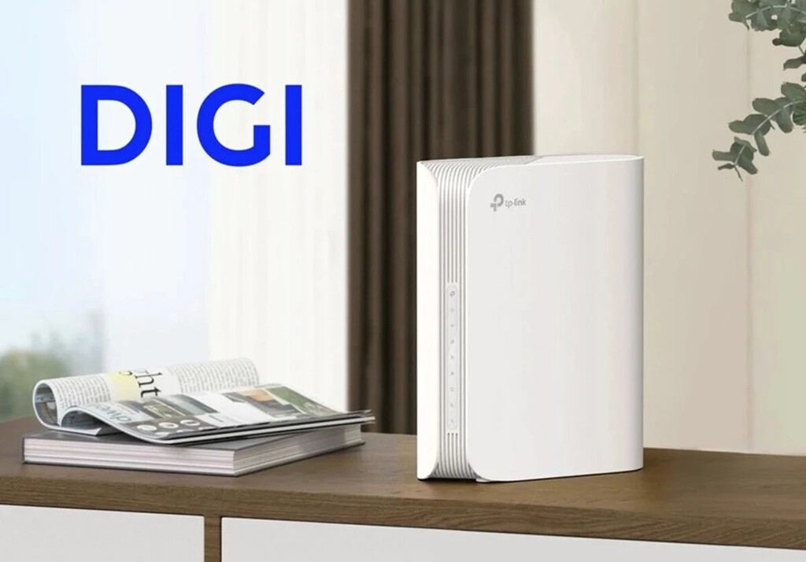
Digi koppelt WiFi-7-Router an TarifgeschwindigkeitWas das für uns heißtHardware-Upgrades als Anreiz für den Tarifwechsel sind ein probates Mittel zur Steigerung des durchschnittlichen Umsatzes pro Nutzer.
Was das für uns heißtDie Inklusion von Premium-Streaming ohne Aufpreis in Basistarifen zwingt uns, die Attraktivität unserer eigenen TV- und Content-Optionen hinsichtlich Preis-Leistungs-Verhältnis kurzfristig neu zu bewerten.
Was das für uns heißtInkludierte Streaming- und Mediendienste in Einstiegstarifen – erhöht den Druck auf unsere Produktvermarktung, da Kunden vermehrt Entertainment als Paket erwarten.
Was das für uns heißtAggressive Händler-Bundles mit negativem Effektivpreis setzen unser direktes Postpaid-Portfolio stark unter Rechtfertigungsdruck.
Was das für uns heißtNeuer 5G-Tarif mit vierfach höheren Geschwindigkeiten in UK - Vorlage für eine vergleichbare Performance-Kampagne im deutschen Netz.
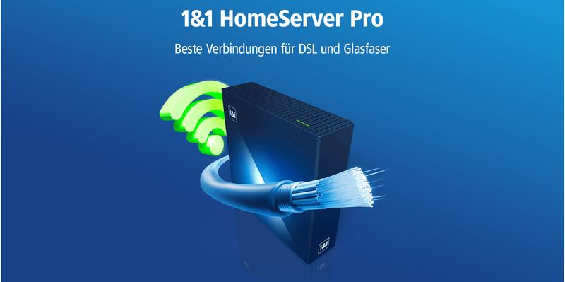
1&1 startet exklusiven FRITZ!Box Premium-Router mit Wi-Fi 7Was das für uns heißtExklusive Hardware-Launches mit Triband und Wi-Fi 7 erhöhen den Wechseldruck im Festnetz - wir müssen vergleichbare Bundle-Vorteile bieten.
Was das für uns heißtGezielte Trade-in-Aktion für Konsolen vor einem Blockbuster-Spielelaunch - Vorlage für die Vermarktung unseres eigenen Geräte-Ankaufs.
Was das für uns heißtExklusive Ticket-Vorteile für die eigenen Kunden bis 2038 verlängert - demonstriktive Treueprogramme stärken die Abwanderungsprävention massiv.
Was das für uns heißtGratis-Freischaltung von Premiinkanälen als Ferienaktion – ein effektives Mittel zur Kundenbindung, das wir für unser TV-Portfolio prüfen sollten.
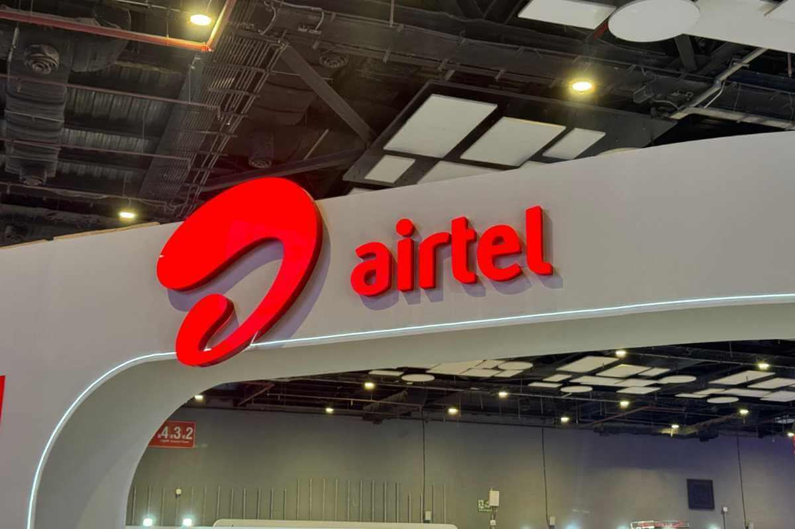
Bharti Airtel streicht günstige Tarife ohne nennenswerte KundenabwanderungWas das für uns heißtTarifbereinigung im Einstiegssegment ohne nennenswerte Abwanderung in Indien - zeigt, dass moderate Preiserhöhungen bei stabiler Qualität sehr wahrscheinlich tragfähig sind.
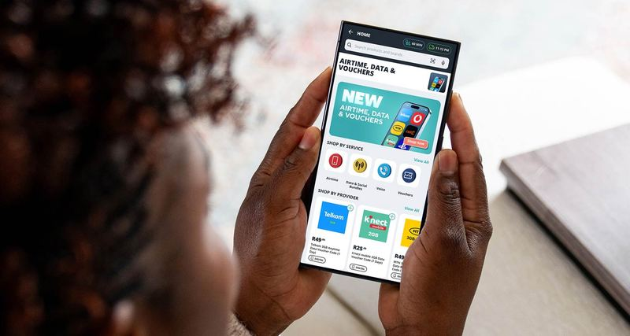
Einzelhändler Shoprite verkauft Guthaben direkt in Liefer-AppWas das für uns heißtDie einfache Integration von Prepaid-Aufladungen in lebensmittelnahe Liefer-Apps ist ein starker Konkurrenzdruck für unsere eigene Kunden-App und sollte als Partnerschaftsmodell geprüft werden.
Was das für uns heißtDie Bündelung von pädagogischen Inhalten mit Breitbandanschlüssen wäre ein attraktives Differenzierungsmerkmal für unsere Familien-Tarife, besonders um sich von reinen Preisangeboten abzuheben.
Was das für uns heißtDie Abkehr von kostenlosen KI-Mehrwertdiensten hin zum Prepaid-Modell ist ein valider Ansatz, um die Profitabilität unserer digitalen Service-Optionen ohne hohe Grundgebührensteigerungen abzusichern.
Was das für uns heißtDas sehr positive Kundenfeedback fuer einfache, transparente Preisstrukturen ohne versteckte Kosten koennte eine Vorlage fuer eine Neuausrichtung unserer Festnetz-Tarifoptionen sein.
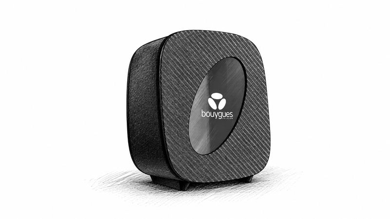
Bouygues Telecom erlässt vier Monate Glasfaser bei KupferabschaltungWas das für uns heißtVier Monate Gratis-Glasfaser als Wechselanreiz beim Kupferausstieg - eine wirksame Mechanik für unsere eigene Migrationskampagne.
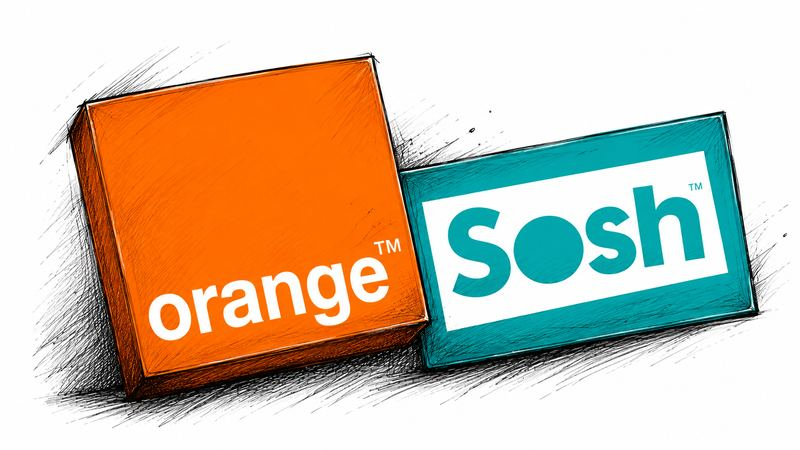
Orange schenkt Livebox- und Mobilfunkkunden einen Monat NetflixWas das für uns heißtEinmonatige Netflix-Vollversion als Start-Incentive in allen Tarifen - ein möglicher Hebel zur Aufwertung unseres Entertainment-Portfolios.
Was das für uns heißtNeuer 5G-Tarif mit 130 Gigabyte für 20,99 Euro bei Orange - setzt unsere Einstiegspreise für Highspeed-Tarife unter Druck.
Was das für uns heißtDie moderate Erhöhung bei Familien-Abos trotz Preissensibilität zeigt, dass integrierte Dienste als Mehrwert wahrgenommen werden - eine Chance für unsere eigenen Entertainment-Bundles.
Was das für uns heißtNetzseitiger Betrugsschutz ohne App-Installation für alle Kunden - erhöht den wahrgenommenen Sicherheitswert unserer Tarife deutlich.
Was das für uns heißtErster Schritt von Digi zur Monetarisierung von Zusatzhardware - erhöht den Druck, unsere eigenen Endkunden-Optionen preissensitiv zu gestalten.
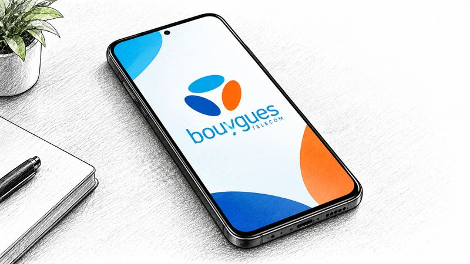
Bouygues Telecom startet Versicherungsangebote ab 1,99 Euro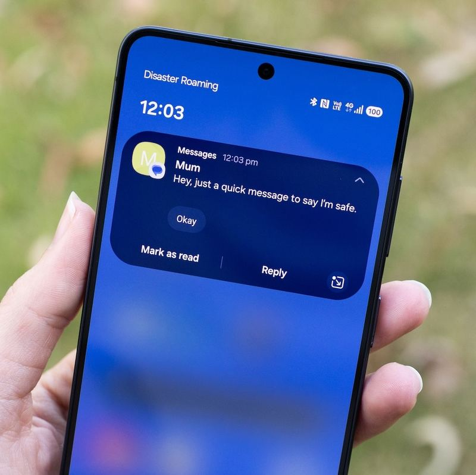
Telstra kommuniziert aktives Notfall-Roaming bei Naturkatastrophen an EndkundenWas das für uns heißtEin solches Versprechen der Notfall-Erreichbarkeit koennte die Kundenloyalitaet staerken und sollte als moegliches Leistungsmerkmal in unseren Service-Optionen geprueft werden.
Auch berichtet von The Fast Mode
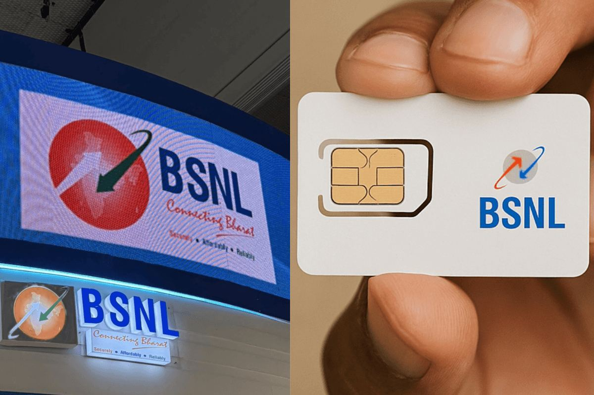
BSNL startet KI-Sprachbot und Netzwerksicherheit auf IMC 2026Was das für uns heißtAnschlusspreiserhöhung auf 39,99 Euro bei o2 - deutlicher Hinweis, dass wir unsere Aktivierungsgebühren auf diesem Niveau stabil halten können.
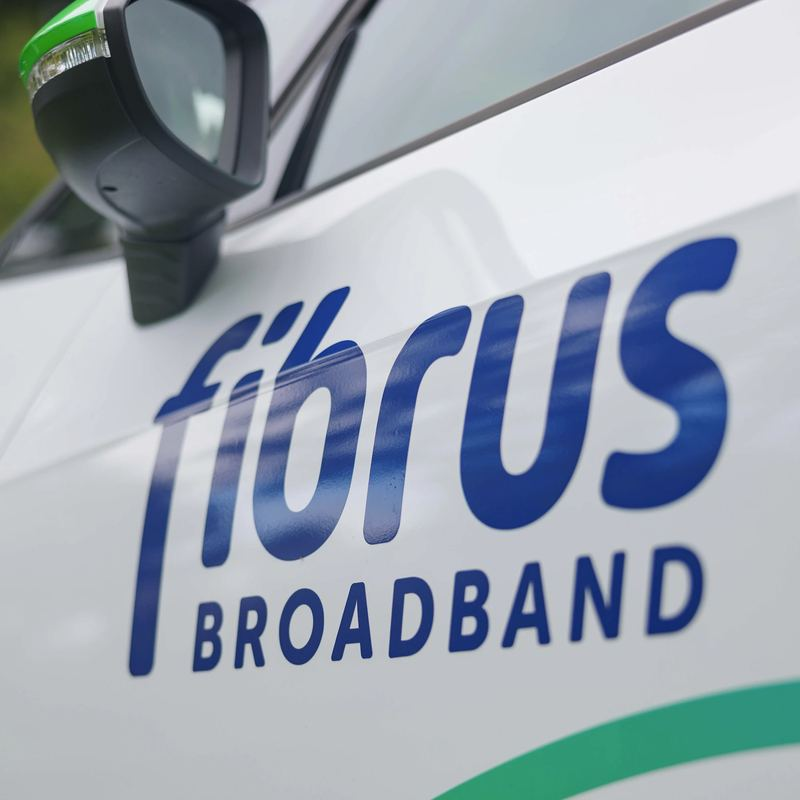
Fibrus lockt TalkTalk-Kunden mit bis zu 400 Pfund AblöseWas das für uns heißtGezielte Übernahmeangebote mit Kündigungs-Ablöse für Kunden strauchelnder Wettbewerber - als Blaupause für aggressive Wechsel-Kampagnen nutzbar.
Was das für uns heißt200 GB 5G für unter 20 Euro in einem Überseegebiet - setzt einen harten Preis-Anker, den wir in unseren Niedrigpreislinien beachten müssen.
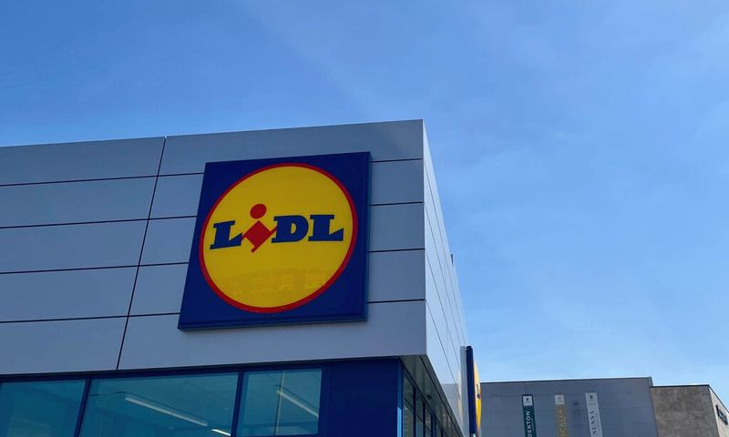
Discounter verkaufen TP-Link WLAN-Repeater unter 30 EuroWas das für uns heißtDie Verfügbarkeit günstiger Mesh-Repeater bei Discountern untergräbt unsere Upselling-Strategie bei Premium-Routern und sollte durch attraktivere Hardware-Bundles oder Service-Vorteile beantwortet werden.
Auch berichtet von Telecoms.com
Was das für uns heißtHochleistungsfähige 5G-Tablets eignen sich ideal für Premium-Daten-Bundles, um Kunden im Hochpreissegment langfristig an unsere Tarife zu binden.
Satellit & Direct-to-Cell
14 Meldungen
Auch berichtet von TELETIME (Brasilien)
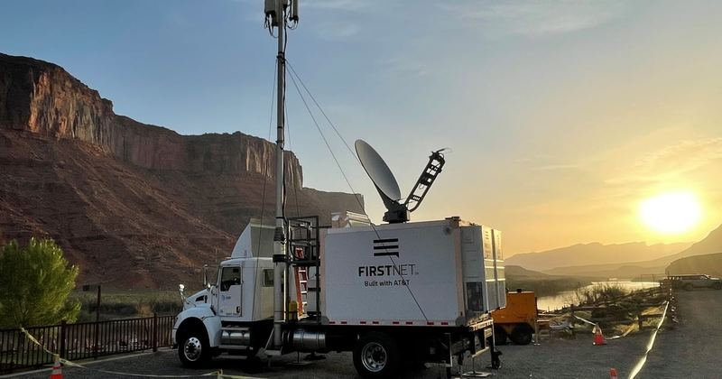
Mobilfunkanbieter beschleunigen Satellitentechnik für globale Konnektivität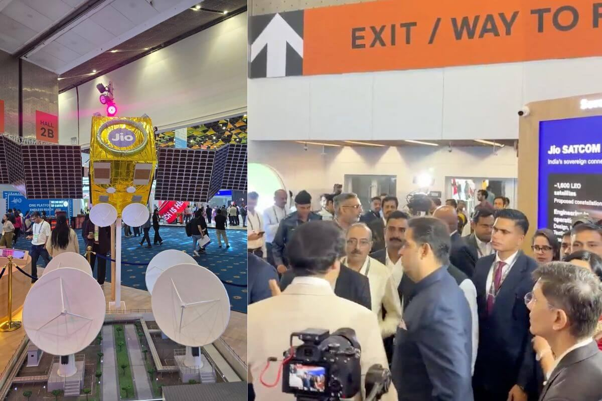
Reliance Jio plant Satellitennetzwerk mit rund 1.600 SatellitenAuch berichtet von Verizon
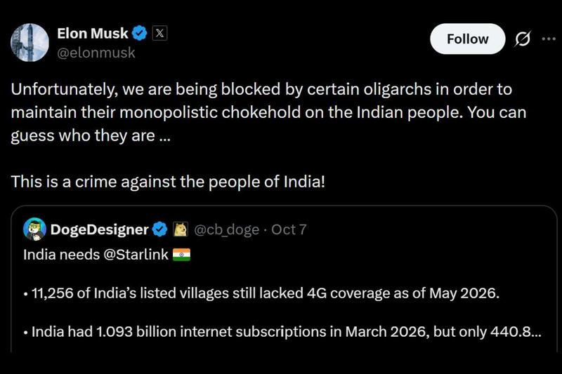
Elon Musk kritisiert indische Oligarchen scharf wegen Verzögerung von Starlink
Regulierung & Politik
8 Meldungen
Was das für uns heißtDie geplante Angleichung auf Inlandspreise ab 2029 erfordert eine frühzeitige Anpassung der Tarifkalkulation und eine mögliche Neuausrichtung unserer EU-Roaming-Optionen.
Auch berichtet von Mobile Europe
Geld & Übernahmen
9 Meldungen
Was das für uns heißtDie Übernahme verdeutlicht die Konsolidierungstendenzen bei Festnetz-Providern, was bei uns eine verstärkte Prüfung der Kundenbindung und Abwanderungsprävention erfordert.
Auch berichtet von Mobile Europe
Partnerschaften
11 Meldungen
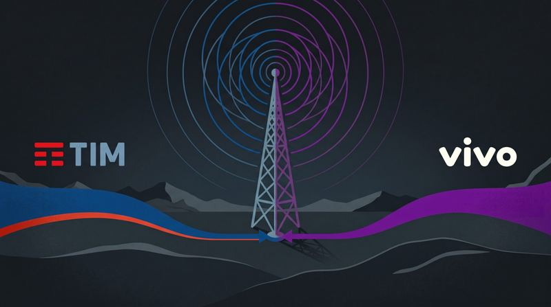
Brasilianische Behörde genehmigt RAN Sharing von Vivo und TIMAuch berichtet von TELETIME (Brasilien), TeleSíntese (BR), TELETIME (Brasilien)
Frühere Ausgaben
9. Oktober 2026
1086 neue Meldungen
7. Oktober 2026
1120 neue Meldungen
2. Oktober 2026
1171 neue Meldungen
30. September 2026
1163 neue Meldungen
25. September 2026
1095 neue Meldungen
23. September 2026
1079 neue Meldungen
16. September 2026
1062 neue Meldungen
11. September 2026
1058 neue Meldungen
9. September 2026
1027 neue Meldungen
4. September 2026
877 neue Meldungen
2. September 2026
669 neue Meldungen
28. August 2026
77 neue Meldungen
27. August 2026
1046 neue Meldungen
26. August 2026
967 neue Meldungen
25. August 2026
866 neue Meldungen
21. August 2026
663 neue Meldungen
19. August 2026
926 neue Meldungen
17. August 2026
897 neue Meldungen
15. August 2026
810 neue Meldungen
14. August 2026
944 neue Meldungen
8. August 2026
256 neue Meldungen
7. August 2026
381 neue Meldungen
6. August 2026
642 neue Meldungen
5. August 2026
426 neue Meldungen
4. August 2026
124 neue Meldungen
31. Juli 2026
220 neue Meldungen
28. Juli 2026
9 neue Meldungen
27. Juli 2026
49 neue Meldungen
26. Juli 2026
4 neue Meldungen
25. Juli 2026
11 neue Meldungen
21. Juli 2026
185 neue Meldungen
20. Juli 2026
27 neue Meldungen
19. Juli 2026
233 neue Meldungen
17. Juli 2026
257 neue Meldungen
16. Juli 2026
1991 neue Meldungen